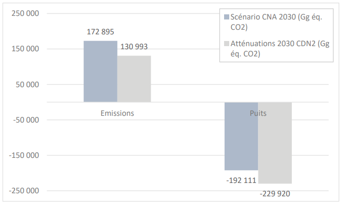
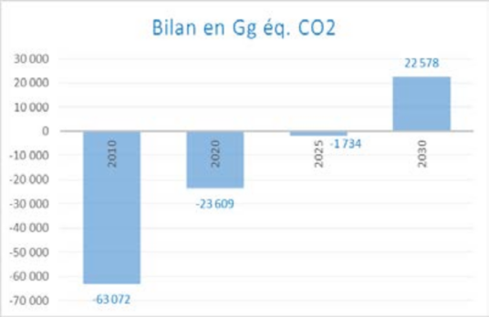
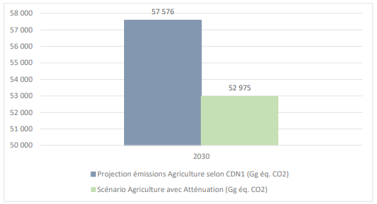
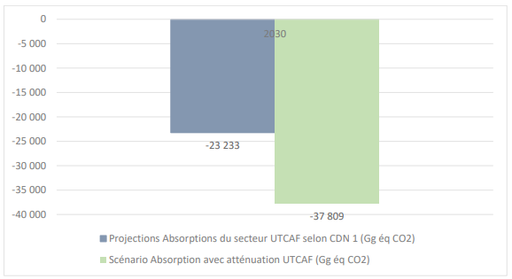
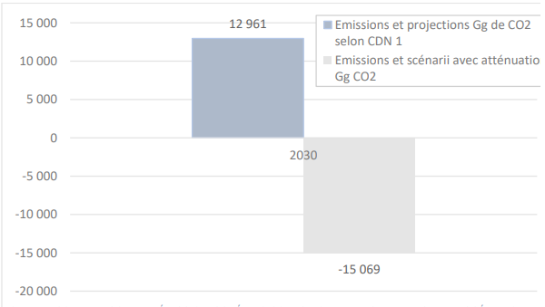
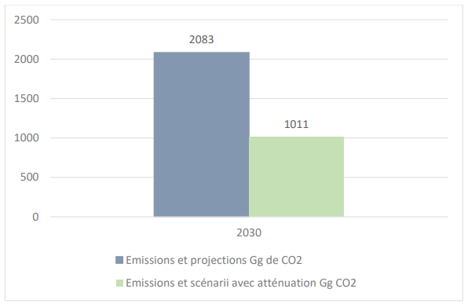
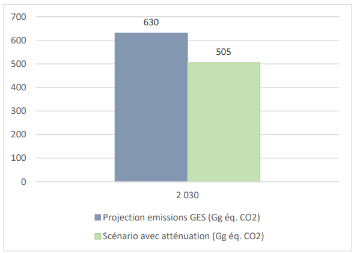
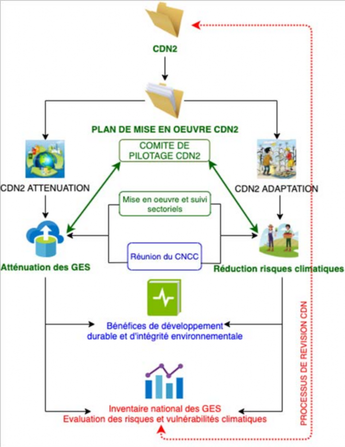

NOVEMBRE 2022
Liste des abréviations
°C Degré Celsius
AFR100 « African Forest Landscape Restoration Initiative »
BNCC Bureau National de Coordination des Changements Climatiques et de REDD+
BNGRC Bureau National de Gestion des Risques et des Catastrophes
CCNUCC Convention Cadre des Nations Unies sur les Changements Climatiques
AIC Agricultures intelligentes face au climat
CBIT « Capacity Building Initiative for the Transparency of the Paris Agreement »
CDN Contribution Déterminée au niveau National de l’Accord de Paris sur les changements climatiques de la République de Madagascar
CDN1 Première Contribution Déterminée au niveau National
CDN2 Deuxième Contribution Déterminée au niveau National de la République de Madagascar
CH4 Méthane
cm Centimètre
CMA « Conference of parties serving as meeting of the Paris Agreement » (Conférence des parties servant comme réunion de l’Accord de Paris)
CNA Cours Normal des Affaires
CNI Communication Nationale Initiale à la Convention Cadre des Nations Unies sur les Changements Climatiques
CO2 Dioxyde de carbone
CPGU Cellule de Prévention et de Gestion des Urgences
CSB Centre de Santé de Base
CTD Collectivités Territoriales Déconcentrées Ha Hectare
DCN Deuxième Communication Nationale à a Convention Cadre des Nations Unies sur les Changements Climatiques
EDBM « Economic Development Board of Madagascar »
FTM « Foibe Taosarintanin’i Madagasikara» (Institut Géodésique et Cartographique National)
GES Gaz à Effet de Serre
Gg éq. CO2 Gigagramme (x 109 grammes) équivalent CO2
GIEC Groupe Intergouvernemental d’experts sur l’Evolution du Climat
GPG « Good Practices Guides », Recommandations en matière de bonnes pratiques pour le secteur de l’utilisation des terres, changements d’affectation des terres et forestrie(GIEC 2000) ; et Recommantions en matière de bonnes pratiques pour le secteur de l’utilisation des terres, changements d’affectation des terres et foresterie (GIEC 2003)
GIRE Gestion Intégrée des Ressources en Eau
ICAM Intoxications dues à la Consommation
des Aliments Marins
IRA Infections Respiratoires Aigues
kg Kilogramme
Km Kilomètre
km2 Kilomètre carré
ktep Kilotonne équivalent pétrole
kW Kilowatt
KWh Kilowatt-heure
LEG « Least developed countries’ Expert Group of the UNFCCC »
m2 Mètre carré
m3 Mètre cube
MEDD Ministère de l’Environnement et du
Développement Durable
mm Millimètre
MRV « Measuring, reporting, verifying »
MW Mégawatt MWc Mégawatt-crête MWh Mégawatt-heure
N2O Hémioxyde d’azote
PANA Programme d’Action National d’Adaptation aux changements climatiques
PCD Plans Communaux de Développement
PIB Produits Intérieurs Bruts
PNA Plan National d’Adaptation aux changements climatiques
SAC Schémas d’Aménagement Communaux
SAP Systèmes d’Alertes Précoces
SRAT Schémas Régionaux d’Aménagement du Territoire
PNCCR Politique Nationale de lutte contre les
Changements Climatiques Révisée
PNLCC Politique Nationale de Lutte contre les
Changements Climatiques
PPN Produits de Première Nécessité
REDD+ Réduction des émissions provenant du déboisement et de la dégradation des forêts, associées à la gestion durable des forêts, la conservation et l’amélioration des stocks de carbone forestier
SDAGIRE Schémas d’Aménagement et de Gestion Intégrée des Ressources en Eau
STD Services Territoriaux Déconcentrés
TCN Troisième Communication Nationale à la Convention Cadre des Nations Unies sur les Changements Climatiques
USD Dollar des Etats-Unis d’Amérique
CDN1 Première Contribution Déterminée au niveau National de la République de Madagascar
CDN2 Deuxième Contribution Déterminée au niveau National de la République de Madagascar
Cp Méthane
CMA « Conference of parties serving as meeting of the Paris Agreement » (Conférence des parties servant comme réunion de l’Accord de Paris)
CNA Cours Normal des Affaires
CNI Communication Nationale Initiale à la Convention Cadre des Nations Unies sur les
Changements Climatiques
CO2 Dioxyde de carbone cm Centimètre
CPGU Cellule de Prévention et de Gestion des Urgences CSB Centre de Santé de Base
UNFCCC « United Nations Framework Convetions on Climate Change ». Voir CCNUCC
UTCAF Utilisation des Terres, Changement d’Affectation des terres et Foresterie
© Sedera Ramanitra/pour CRS Madagascar
La République de Madagascar se situe à l’Est des côtes africaines. Le territoire comprend la Grande Ile qui s’étire du nord au sud sur une distance géographique de plus de 1500 km, entre 12 et 25° de latitude Sud, quasiment en milieu intertropical, et occupe une superficie de 587 041 km2. Madagascar possède aussi des territoires maritimes dotés d’îlots, d’atolls et d’archipels submersibles par l’augmentation du niveau de la mer.
Le climat de Madagascar se subdivise en deux saisons : une saison chaude et pluvieuse, de novembre en avril, et une saison fraîche et sèche entre mai et octobre. La saison chaude est caractérisée par la formation des perturbations cycloniques dans le bassin du sud-ouest de l’Océan Indien, touchant le pays en moyenne trois à cinq fois par an. La température moyenne annuelle sur la Grande Ile est de 24 à 27 °C. La précipitation moyenne annuelle diminue du Nord au Sud, de 1 500 mm à moins 0,400 mm par an.
A propos du dérèglement climatique, la hausse des températures se manifeste par une augmentation de 0,27 °C de la moyenne nationale tous les 10 ans. La modification du régime pluviométrique s’exprime par l’allongement des saisons sèches, l’intensification des pluies torrentielles et une diminution de 8% des précipitations depuis 1990. Entre 1990 et 2020, Madagascar a enregistré 70 catastrophes climatiques majeurs dont 64 perturbations cycloniques et six épisodes de sécheresses sévères. L’élévation du niveau de la mer atteint 0,6 cm par an entre 1994 et 2008. A l’horizon 2050, les changements suivants sont prévus se manifester avec de forte probabilité: diminutions des précipitations jusqu’à -8% ; diminution de la quantité d’eau disponible de 25% au Nord et à l’Est et de 40% dans le Sud-ouest ; hausse des températures de +1,2 °C à +2,1 °C ; et une élévation du niveau de la mer jusqu’à 43 cm (2080).
En 2020, Madagascar compte 27,2 millions d’habitants. Le taux de croissance démographique est de 3%. La population est très jeune : plus de 85% des habitants ont moins de 45 ans et 28% environ sont des enfants de bas-âges (moins de 10 ans). La disparité rural-urbain est très marquée sur de nombreux aspects du développement socio- économique, dont l’inégalité de la répartition de la population et de la répartition de la richesse en général.Madagascar est un pays moins avancé, peu industrialisé et ayant des infrastructures peu denses. L’économie nationale dépend fortement des secteurs primaires. Plus de 83% de la population vivent de l’agriculture. La riziculture domine, emploie 80% de la population agricole et constitue la commodité alimentaire la plus cultivée. Les cultures de rente sont exportées à 90%, représentent 30% des exportations, et constituent les plus importantes sources de valeurs ajoutées de l’économie nationale. Les croissances agricoles annuelles (1,0% pendant la dernière décennie) sont souvent anéanties par les fluctuations climatiques et d’autres facteurs endogènes. Les ressources halieutiques représentent 6% environ du PIB et 6% des exportations. L’exploitation du potentiel halieutique n’est pas optimisée et emploie seulement 5% de la population. La zone économique exclusive et les vastes zones littorales et mangroves favorables à l’aquaculture sont quasi inexploitées, et les activités actuelles subissent les effets néfastes de la destruction des mangroves et des récifs coralliens et du réchauffement climatique. Le tourisme, 15% du PIB en 2020, dépend majoritairement des écosystèmes naturels et de la biodiversité, et les infrastructures touristiques sont sensibles aux aléas cycloniques.
Pour Madagascar, l’accès au développement durable et la lutte contre la pauvreté constituent les piliers de la lutte contre les effets néfastes du réchauffement planétaire. En 2020, la pauvreté multidimensionnelle atteint 74% et la prévalence de la malnutrition 48% de la population. Les causes essentielles de la malnutrition sont la pauvreté, le manque d’éducation, les aléas climatiques, les pratiques agricoles traditionnelles et l’insuffisance des moyens pour les infrastructures hydroagricoles. A partir de l’année 2015, les zones d’alertes à l’insécurité alimentaire se focalisent dans le Grand Sud, où l’insécurité alimentaire sévère affecte 1,31 millions de personnes en décembre 2021 et 500 000 personnes ont des besoins nutritionnels urgents. Depuis les 10 dernières années, Madagascar enregistre un nombre croissant de décès dus aux maladies climato-sensibles. La déforestation et la destruction des écosystèmes naturels sont parmi les plus grands facteurs de vulnérabilité climatique, à travers la perte des services écosystémiques. En 2020, la couverture forestière totale était estimée à 12,4 millions ha dont 5,6 millions ha de forêts humides sempervirentes et 6,7 millions ha de forêts sèches, des fourrés, des mangroves et des forêts de reboisement. Le taux moyen de déforestation annuel est de 1,5% en 2019. La dégradation des terres concerne 12 des 23 régions de Madagascar, avec une superficie de 70 000 km2 nécessitant des actions immédiates en 2024.
La déperdition forestière et le changement d’affectation des terres constituent les causes les plus importantes de la baisse des capacités nationales d’absorption des gaz à effet de serre. Entre 2010-2020, ce sont les principales sources des gaz à effet de serre, représentant plus de 80% des émissions nationales. L’Agriculture est le second émetteur de gaz à effet de serre, contribuant à 16% des émissions nationales. L’agriculture de subsistances (rizicultures traditionnelles, maïs, manioc, élevage extensif de bovins) détruit rapidement les stocks de carbones forestiers et des zones humides.
En 2010, l’Énergie est responsable de 2% des émissions nationales. La sous-catégorie Résidentiel (comprenant les énergies de cuissons : plus de 90% de la population utilisent les bois-énergies comme combustible) reste le plus gros utilisateur d’énergie. Elle est suivie par les Industries énergétiques. La consommation de combustibles fossiles pour les transports (routiers et ferroviaires) est estimée à la moitié du volume total importé, soit 500 000 m3 environ. L’approvisionnement du pays en hydrocarbures est exclusivement dépendant de l’importation, et la chaîne d’approvisionnement en énergie au niveau national est extrêmement vulnérable aux aléas climatiques. Les Industries énergétiques et le Transport sont des facteurs importants du développement socio-économique, mais les infrastructures y afférentes sont régulièrement impactées par les perturbations cycloniques et manquent d’entretiens.Les « Procédés Industriels et Utilisation des produits » et les « Déchets » n’apportent ensemble qu’environ 0,4% des émissions nationales en 2010. Les émissions du secteur Déchets ont tendance à accroître avec la croissance rapide de la population. Pour le secteur Procédés Industriels et Utilisation des Produits, les potentiels du pays en matière première appellent à la précaution.
Les tendances des émissions et absorptions au niveau national appellent à des actions plus rigoureuses en matière d’atténuation. Madagascar considère que ces nécessités de contribuer davantage aux démarches mondiales de réduction des émissions devraient bénéficier au développement durable et à l’intégrité environnementale du pays. Ces contributions requièrent des cadres politiques et stratégiques pour créer des environnements favorables et incitatifs, renforçant la participation de tous les acteurs à tous les niveaux.
Madagascar déploie des efforts pour accéder au développement durable. Ces efforts se basent sur la modernisation des secteurs de production existants et l’industrialisation. Certains besoins quotidiens, auxquels le pays dispose des potentiels non négligeables (textiles et habillements, matériaux de construction, médicaments, hydrocarbures, etc.), sont quasi exclusivement importés. Les situations observées au sein chaque secteur (et les scenarii projetés) de développement socio-économique font appel au renforcement des capacités d’adaptation et de réduction des vulnérabilités climatiques.
La CDN2 tient compte des documents stratégiques existants tels que (i) la Politique Nationale de Lutte contre le Changement Climatique révisé (PNLCCr , 2021) qui sert de référence à toutes les actions de lutte contre le changement climatique à Madagascar ; (ii) l’Action Nationale d’Atténuation Appropriée (ANAA, 2003) qui vise des réductions des émissions de gaz à effet de serre dans un contexte de développement durable ; (iii) le pays dispose également d’un Plan National d’Adaptation ( PNA, 2021) qui va servir de cadre stratégique pour les actions d’ adaptations prioritaires à moyen et long terme. Le présent document s’articule également avec la Politique Générale de l’Etat (PGE) incluant le Plan d’Emergence de Madagascar (Sud) et le Plan d’Emergence de Madagascar (PEM) les lois, les politiques, les stratégies, les plans nationaux et sectoriels existants.
Ainsi, la CDN2 se positionne comme un document de planification stratégique de lutte contre les changements climatiques plus ambitieux pour les cinq années à venir auquel toutes les actions au niveau national devraient se référer. Une liste des principaux instruments de référence est donnée dans la Section 5 (Arrangement Institutionnel). Le Gouvernement de Madagascar a confié l’élaboration de la CDN2 au Ministère de l’Environnement et du Développement Durable (MEDD). Ce processus a impliqué les départements et les institutions chargés de la mise en œuvre des programmes sectoriels de lutte contre les changements climatiques, ainsi que les collectivités territoriales décentralisées, les partenaires techniques et financiers, le secteur privé et les organisations de la société civile.
Progression par rapport à la contribution déterminée au niveau national antérieure (Article 4, paragraphe 3, de l’Accord de Paris), passage progressif vers des objectifs de réduction des émissions à l’échelle de l’économie, eu égard aux différentes situations nationales
Sources et gaz à effet de serre et ses impacts
La CDN1 n’a considéré que les secteurs suivants : Agriculture, Energie UTCAF et Déchets. La CDN2 a inclus le secteur Procédés Industriels et Utilisation des Produits. Ce qui a rehaussé les ambitions par rapport aux sources.
Ambitions de réduction des émissions et de renforcement des capacités d’absorption
En 2030, la CDN2 vise une réduction de 28% des émissions des gaz à effet de serre, soit 48 403 Gg éq. CO2. Additivement à cette réduction des émissions, la CDN2 vise à renforcer les capacités de son absorption de gaz à effet de serre de l’ordre de 20%, soit -37 809 Gg éq. CO2 de séquestrations additionnelles.
En 2030, la CDN1 a visé une réduction de 14% des émissions des gaz à effet de serre directs, équivalent 29 990 Gg éq. CO2 et une séquestration additionnelle de -61 000 Gg éq. CO2, soit 32% de renforcement des puits carbones. Les ambitions d’atténuation présentées dans la CDN2 semblent avoir régressé par rapport à celles de la CDN1 ; mais elles sont réalistes et réalisables, et reflètent les réalités des politiques sectorielles et des contextes socio-économiques actuels et projetés. Concernant le secteur UTCAF, les potentiels d’atténuation des actions d’atténuation n’étaient pas pleinement inscrits dans la CDN2 puisque seuls 25-30% des résultats d’atténuation du secteur seront exprimés d’ici 2030.
Approches méthodologiques et métriques utilisées pour l’estimation et la comptabilisation des émissions et de l’absorption des gaz à effet de serre
Les inventaires nationaux des gaz à effet de serre réalisés à Madagascar (CNI, DCN, TCN et CDN1) servent de bases pour l’élaboration de la CDN2. Ces inventaires utilisent les Lignes Directrices 1996 Révisées du GIEC, appuyées par les Recommandations du GIEC en matière de bonnes pratiques et de gestion des incertitudes pour les inventaires nationaux de gaz à effet de serre (GPG 2000) et les Recommandations en matière de bonnes pratiques pour le secteur UTCAF (GPG 2003). Tous les inventaires des gaz à effet de serre au niveau des secteurs sont de Tiers 1.
Madagascar est actuellement en train d’élaborer son premier Rapport Biennal Actualisé et sa Quatrième Communication Nationale. Les résultats des inventaires correspondant à ces rapports nationaux permettront de mettre à jour les estimations et les émissions des gaz à effet de serre. Ils alimenteront la mise à jour de la CDN à partir de l’année 2025.
La CDN2 comprend des activités d’élaboration politiques sectorielles et réglementaires qui devraient permettre au pays d’étendre progressivement ses actions climatiques, en parallèle à ses objectifs de développement durable. Par ailleurs, la réalisation de nombreuses actions climatiques sont intersectorielles et sont des actions de mise à l’échelle des initiatives déjà entamées avant 2020.
L’opérationnalisation des systèmes MRV national et sectoriels vont permettre de collecter des données qui permettent au pays de passer progressivement vers un réflexe politique de réduction des émissions à l’échelle de l’économie. A cet effet, tel que stipulé par l’article 4, paragraphe 5, de l’Accord de Paris, en tant que pays en développement et que l’adaptation est prioritaire, le Gouvernement de Madagascar compte bénéficier des appuis des autres Parti à l’Accord de Paris pour la réalisation des objectifs contenus dans son CDN2

FIGURE 1 : EMISSIONS ET ABSORPTONS, SCÉNARIO COURS NORMAL DES AFFAIRES, COMPARÉES AUX SCÉNARII D’ATTÉNUATION DE GAZ À EFFET DE SERRE EN 2030

FIGURE 2 : TENDANCE DE STATUT DE PUITS CARBONE SANS RENFORCEMENT DES ACTIONS D’ATTÉNUATION
Madagascar est encore classifié en tant que pays puits Carbone, d’où l’importance de ce volet atténuation. Il est tout de même à remarquer que l’adaptation est le volet prioritaire pour Madagascar compte tenu que le pays figure parmi les plus vulnérables au changement climatique dans le monde.
En 2030, Madagascar vise à réduire ses émissions à 48 403 Gg éq. CO2, soit une baisse de 28 % par rapport au scénario cours normal des affaires. A cette réduction des émissions s’ajoutera le renforcement des puits de gaz à effet de serre de l’ordre de 20%, représentant des émissions évitées et de renforcement des puits carbones de l’ordre de 37 809 Gg éq. CO2 du secteur Utilisation des Terres et Changements d’Affectation des terres et des Forêts (UTCAF).
Sans renforcer les actions d’atténuation, Madagascar sortira de son statut de puits carbone juste après l’année 2025 où le pays affichera un bilan de -1 734 Gg éq. CO2 contre son statut de puits absorbant -63 072 Gg éq. CO2 en 2010 et -23 609 Gg éq. CO2 en 2020. A l’horizon 2030, en omettant les politiques et mesures d’atténuations dans les politiques sectorielles, Madagascar affichera un bilan net émettant 22 578 Gg éq. CO2 .
2.2.1 MESURES TRANSVERSALES
Les mesures d’atténuation transversales sont :
Renforcer la capacité institutionnelle du secteur ;
Redynamiser la synergie interministérielle en se focalisant sur les indicateurs pour le suivi et évaluation ;
Mise en place de plan d’action qui permet la mise en œuvre, les suivis et évaluations des ations d’atténuation. Ce plan intégrera aussi l’application des outils MRV émissions, MRV attnuations et MRV soutien.
2.2.2 AGRICULTURE
2.2.2.1 OBJECTIFS D’ATTÉNUATION DES GAZ À EFFET DE SERRE
Les contributions les plus importantes vont porter sur les Sols cultivés et la Riziculture (MIRR, riz pluvial, Modèles Intégrés d’Agriculture Résiliente, amélioration de la production rizicole, agriculture de conservation et agriculture biologique). A Madagascar, la culture du riz et l’expansion des sols cultivés sont intimement liées.

Projection émissions Agriculture selon CDN1 (Gg éq. CO2) Scénario Agriculture avec Atténuation (Gg éq. CO2)
FIGURE 3 : COMPARAISON DES ÉMISSIONS, SCÉNARIO COURS NORMAL DES AFFAIRES ET DES SCÉNARII D’ATTÉNUATION À L’HORIZON 2030, SECTEUR AGRICULTURE
La contribution du secteur sera estimée à 4 601 Gg éq. CO2.
Les contributions de la Fermentation entérique dans l’atténuation des gaz à effet de serre vont monter progressivement à travers les initiatives pilotes d’intégrées d’élevage de bovidés.
Les émissions tenant compte des actions d’atténuation des catégories sources sont les suivantes :
Sols cultivés : 20 983,4 Gg éq. CO2 ;
Fermentation entérique : 15 017,4 Gg éq. CO2 ;
Gestion de fumier : 11 510,1 Gg éq. CO2 ;
Riziculture : 5 463,5 Gg éq. CO2.
2.2.2.2 MESURES D’ATTÉNUATION
L’atteinte de ces objectifs d’atténuation sera réalisée en mettant en œuvre les mesures ci-après :
Faciliter les conditions de mise en place des actions d’atténuation du secteur agriculture en élaborant et en mettant à jour les différents cadres techniques et juridico-institutionnels ;
Mettre en place des initiatives respectant de l’environnement comme les initiatives intégrées et l’agriculture biologique ;
Mettre à l’échelle les innovations agricoles basées sur les nouvelles technologies de production comme le MIAR, l’Agriculture biologique, l’Agriculture Intelligente face au Climat), l’Agroforesterie et l’Agroécologie, tout en déployant la mise à disposition des intrants ;
Mettre en place les mécanismes de suivi et de renforcement de capacités technologiques
2.2.3 UTILISATION DES TERRES, CHANGEMENT D’AFFECTATION DES TERRES ET FORESTERIE (UTCAF)
2.2.3.1 OBJECTIFS D’ATTÉNUATION DES GAZ À EFFET DE SERRE
Les contributions les plus importantes vont porter sur les reboisements à grandes échelles (espèces autochtones, essences ligneuses à vocation socio-économique, mangroves). Les contributions du secteur vont totaliser -37 808,6 Gg éq. CO2, soit 63,0% de plus que le scénario « Cours normal des affaires ».
Ces contributions sont détaillées par rapport à la catégorie sources ci-dessus :
Reboisement forestier : -20 232,8 Gg éq. CO2 ;
Restauration mangroves : -14 269,3 Gg éq. CO2 ;
Restauration forêts naturelles dégradées : -2 878,0 Gg éq. CO2 ;
Restauration paysages agroforestiers : -428,5 Gg éq. CO2.

D’autre part, le sous-secteur résidentiel est dominé par le bois-énergie en termes de consommation d’énergie. En effet, si la majorité des objectifs liés à la biomasse est comptabilisée, soit dans le secteur Forêt-biodiversité, soit dans l’agriculture (UTCAF), par contre, la biomasse destinée pour la cuisson (le bois-énergie) qui constitue près de 92% du bilan énergétique est comptabilisée dans le secteur Energie (sous-secteur résidentiel). La baisse de la consommation de bois-énergie amènerait une réduction de l’émission de l’ordre de 1 000 Gg éq. CO2 jusqu’en 2030 selon la Stratégie Nationale d’approvisionnement en bois-énergie. Ce qui permet de conclure que l’objectif du secteur Energie est largement atteint par rapport à la projection de la CDN1.

Projections Absorptions du secteur UTCAF selon CDN 1 (Gg éq CO2)
Scénario Absorption avec atténuation UTCAF (Gg éq CO2)
FIGURE 4 : COMPARAISON DES PROJECTIONS DES ÉMISSIONS, SCÉNARIO COURS NORMAL DES AFFAIRES, ET DES SCÉNARII D’ATTÉNUATION À L’HORIZON 2030, SECTEUR UTCAF
2.2.3.2 MESURES D’ATTÉNUATION
Les mesures suivantes permettront d’atteindre les objectifs estimés ci-dessus :
Mettre à jour les outils de travail pour la réduction des émissions du secteur UTCAF concernant la stratégie REDD+ et les outils de conservation des ressources naturelles ; Sensibiliser les parties prenantes et renforcer les capacités des acteurs pour la mise en œuvre des activités de conservation ;
Finaliser les outils de suivi et les opérationnaliser au niveau régional (MRV et systèmes d’information) ;
Doter des matériels pour le suivi de la réduction des émissions dues aux changements d’occupation des sols ;
2.2.4 ENERGIE
2.2.4.1 OBJECTIFS D’ATTÉNUATION DES GAZ À EFFET DE SERRE
Les émissions du secteur énergie proviennent en majeure partie de deux catégories sources: le sous-secteur industries énergétiques, dont les centrales thermiques de production d’électricité qui utilisent massivement des ressources d’origine fossiles et le sous-secteur transport. Le potentiel d’atténuation du secteur énergie est de 28 030 Gg éq. CO2.
FIGURE 5 : COMPARAISON DE L’ÉMISSION, SCNÉARIO COURS NORMAL DES AFFAIRES ET DU SCÉNARIO D’ATTÉNUATION À L’HORIZON 2030, SECTEUR ENERGIE
2.2.4.2 MESURES D’ATTÉNUATION
Le secteur Energie va tendre vers une transition énergétique avec du mix de production pour l’électricité et l’éclairage utilisant 80% de ressources renouvelables en 2030. Ce mix tient compte de l’efficacité énergétique dans l’objectif de réduction des pertes énergétiques dans le transport, la distribution et la consommation de l’électricité, dans la transformation et l’utilisation énergétique de la biomasse, ainsi que la réduction de la consommation des produits pétroliers pour la production d’électricité et pour les usages commerciaux et industriels. Différentes mesures sont prévues pour atténuer les effets de la production, de l’exploitation et de l’utilisation de l’énergie sous ses différentes formes :
Élaborer des cadres juridico-institutionnels pour la réduction des émissions vis-à-vis du secteur énergie, transport et biomasse pour l’efficacité énergétique ;
Mettre à jour et renforcer les cadres et référentiels sur le transport et la mobilité urbaine ;
Développer des projets et programmes favorisant les innovations vertes en appuyant la production de biodiesel, en développant des projets minigrid hydroélectriques, en progressant vers les voitures électriques, en basculant vers l’éolienne et le solaire ;
Apporter des innovations technologiques à moindre émission dans le secteur du transport incluant le transport par câble, tramway de Tana ;
Mettre à l’échelle les initiatives de foyers améliorés ;
Mettre en place des dispositifs de renforcement de capacités sur les technologies basses carbone (empreinte carbone et bioénergie) ;
Faire des transferts de technologie sur les différents outils, normes et standards sur la résilience climatique
2.2.5 DÉCHETS
2.2.5.1 OBJECTIFS D’ATTÉNUATION DES GAZ À EFFET DE SERRE
La CDN2 prévoit une réduction de 51,4% des émissions prévues par le scénario Cours normal des affaires de la CDN1 . Les émissions du secteur seront diminuées à 1 072 Gg éq. CO2 (scénario avec atténuation) contre 2 083 Gg éq. CO2 (scénario « Cours normal des affaires ») :

Renforcer la mise en place d’un système de gestion fiable des données au niveau des chefs-lieux des régions ;
Faire des transferts de technologie sur les innovations en termes de traitements des déchets ;
Suivre les actions d’atténuation liées à la gestion des déchets en mettant en place les structures opérationnelles.
FIGURE 6 : COMPARAISON DES PROJECTIONS DES ÉMISSIONS, SCÉNARIO COURS NORMAL DES AFFAIRES, ET DES SCNÉNARII D’ATTÉNUATION À L’HORIZON 2030, SECTEUR DÉCHETS
2.2.6.2 MESURES D’ATTÉNUATION
Les mesures d’atténuation y correspondantes sont :
Développer les cadres de travail du secteur Déchet, Eau et Assainissement afin de faciliter la mise en œuvre des actions d’atténuation (code municipal d’hygiène, schémas directeurs d’assainissement, programme national assainissement, mesures fiscales) ;
Mettre à jour et renforcer les cadres et référentiels sur la gestion des déchets, de l’eau et de l’assainissement ;
Développer et mettre en œuvre des projets innovants sur la gestion des déchets en intégrant la chaîne de valeurs déchets et la normalisation ;
Appuyer les actions en faveur de la gestion des effluents liquides ;
Mettre à l’échelle des initiatives de valorisation normalisée des déchets ;
Sensibiliser les parties prenantes et renforcer les capacités des acteurs sur les processus innovants de gestion de déchets ;
2.2.6 PROCÉDÉS INDUSTRIELS ET UTILISATION DES PRODUITS
2.2.6.1 OBJECTIFS D’ATTÉNUATION DES GAZ À EFFET DE SERRE
L’objectif de réduction de secteur est de 125 Gg éq. CO2 à travers la diminution de l’usage du clinker de 20% dans la production de ciment .

FIGURE 7 : COMPARAISON DES PROJECTIONS DES ÉMISSIONS, SCNÉARIO COURS NORMAL DES AFFAIRES, ET DES SCNÉARII D’ATTÉNUATION À L’HORIZON 2030, SECTEUR PROCÉDÉS INDUCTRIELS ET UTILISATION DES PRODUITS
2.2.6.2 MESURES D’ATTÉNUATION
Bien que d’autres industries émettrices existent, les émissions produites par la cimenterie dominent. Les mesures ci-après permettent d’atteindre l’objectif sectoriel susmentionné :
Renforcer les cadres juridico-institutionnels pour le remplacement du clinker et sur l’utilisation
des produits industriels ;
Appuyer les processus de remplacement du clinker ;
Sensibiliser les parties prenantes à l’intégration du processus environnemental dans les industries ;
Appuyer la mise en place des outils de suivi du secteur PIUP ;
Doter le secteur PIUP de matériels pour le suivi des actions ;
Pour conclure, ces mesures d’atténuation permettront des réductions des émissions de GES et des renforcements de l’absorptions des puits carbones. Dans cette optique, ces mesures devraient être intégrées et priorisées dans les programmations sectorielles et nationales. Ainsi une coordination de la mobilisation financière s’avère nécessaire et indispensable pour la mise en œuvre.
Madagascar vise à renforcer ses capacités nationales d’adaptation et à réduire les risques climatiques, plus particulièrement la prise en compte des deux points suivants :
Tous les investissements prendront compte de la réduction des risques et des vulnérabilités climatiques
Des infrastructures humaines, matérielles et institutionnelles sont renforcées, à tous les niveaux, pour faire face aux risques climatiques.
Les objectifs d’adaptation seront atteints par l’application des mesures transversales et sectorielles. En outre, les actions climatiques dans cette section auront aussi pour objectif de «renforcer la résilience face aux changements climatiques des 32,3 millions de malagasy en 2030 ».
3.2.1 MESURES TRANSVERSALES
Les mesures transversales concernent plusieurs secteurs et sont à appliquer dans l’atteinte des objectifs d’adaptation :
Appliquer de manières effectives les normes et/ou règles sectorielles déjà établies ou nitiées, dont les normes d’infrastructures résistantes aux aléas climatiques ;
Renforcer l’amélioration des systèmes d’alerte précoce aux cyclones et mettre à l’échelle les systèmes d’alerte précoce multirisques en intégrant la surveillance phytosanitaire, les avertissements agricoles, les alertes aux sécheresses et la surveillance alimentaire et nutritionnelle ;
Faire le suivi en temps réel des informations climatiques ;
Elaborer et mettre à jour les planifications et gestions territoriales tenant compte de la gestion durable des ressources naturelles et de l’adaptation au changement climatique ;
Exécuter la mise en œuvre des planifications et des gestions territoriales tenant compte de leur caractère multisectoriel ;
Renforcer et appliquer les résultats de recherches pour tous les secteurs concernés par les mesures d’adaptation :
Disposition de données quantitatives et apport des solutions durables contre l’infiltration saline et la salinisation ;
Promotion des recherches santé-climat ;
Déploiement d’activités de suivis et de recherches pour le secteur agriculture-élevage; amélioration de la connaissance (1) des impacts de l’augmentation de la température sur les commodités alimentaires, (2) des aléas climatiques sur les facteurs affectant le secteur: animaux ravageurs, espèces envahissantes, maladies émergentes, etc. ; détermination de l’ampleur et les impacts de la salinisation de l’eau, et de l’infiltration saline sur les parcelles de cultures ; promotion de la recherche scientifique ainsi que son application au développement de l’élevage à Madagascar ;
Recherche et innovations sur l’agro biodiversité.
3.2.2 AGRICULTURE - ELEVAGE
L’économie nationale dépend du secteur agriculture, elle représente 24, 1% du PIB. Cependant, ce secteur figure parmi les secteurs les plus vulnérables aux changements climatiques. Les mesures prises en ce qui concerne l’Agriculture cités ci- après s’alignent avec le (i) PEM dans son engagement n°1 et n° 2 visant l’autosuffisance alimentaire, (ii) la Politique Nationale de lutte contre le Changement Climatique révisée ( PNLCCr) dans son axe stratégique 2 sur le renforcement d’adaptation et réduction de la vulnérabilité, ainsi qu’avec (iii) les programmes n°1 et 2 du Plan National d’Adaptation qui vise la résilience des agrosystèmes et l’adaptation des pratiques agricole et élevage aux conditions climatiques
Renforcer les référentiels stratégiques, les schémas de gestion et les bases de connaissances sur la vulnérabilité et les réponses au changement climatique (prospectives intersectorielles) ;
Faciliter l’accès aux moyens de mise en œuvre notamment par rapport au crédit agricole et l’assurance agricole ;
Promotion des pratiques résilientes sur le système d’élevage, sur la modernisation des systèmes de production agricole et sur l’utilisation des Zones d’Émergence Agricole ;
Mise en application des normes (infrastructures agricoles) et des plans de mise en œuvre ;
Renforcement des capacités sur les techniques innovantes d’agriculture durable et renforcement de la résilience des animaux d’élevage (y compris l’amélioration /conservation des races) ;
Développement des systèmes de suivi et d’alerte précoce spécifiquement sur la salinisation et sur les pestes et les maladies.
3.2.3 RESSOURCES EN EAU
La disponibilité de l’eau risque de diminuer avec le réchauffement climatique. La gestion intégrée des ressources en eau, la planification des ressources hydriques sont capitales pour assurer la pérennité des ressources en eau. Les mesures prises dans le cadre du présent document sont alignées avec (i) le PEM dans son engagement n°9 sur l’Energie et l’eau pour tous, (ii) le PNLCC révisé en son axe stratégique 2 sur le renforcement des actions d’adaptation, et sur le (iii) PNA à travers le programme structurant n° 4 « amélioration de l’accès à l’eau potable en milieux urbains et ruraux »
Les mesures à mettre en œuvre pour les ressources en eau sont les suivantes :
Renforcer les référentiels stratégiques, les schémas de gestion et les bases de connaissances sur la vulnérabilité et les réponses au changement climatique ;
Faciliter l’accès aux moyens de mise en œuvre en investissant dans la maîtrise de l’eau (production et alimentaire) ;
Renforcer la gouvernance des infrastructures et des systèmes de gestion et soutenir l’effectivité de la gestion intégrée des ressources en eau ;
Promotion de pratiques résilientes et de la valorisation durable des ressources ;
Mise en application des normes et des plans de mise en œuvre (infrastructure en assainissement et eau potable) ;
Renforcement des capacités (institutionnelle et techniques).
Mettre à jour les bases des données et renforcer les systèmes de suivi et d’alerte précoce
3.2.4 FORÊTS ET BIODIVERSITÉ
La dégradation des terres, la perte de la biodiversité liée aux effets néfastes du changement climatique constitue une menace pour Madagascar. Les mesures prises dans la CDN2 pour le secteur foret et biodiversité visent ainsi d’une part à réduire la vulnérabilité des écosystème et d’autre part de trouver une synergie entre la conservation et l’atténuation du changement climatique. Ces mesures s’alignent avec (i) le PEM à travers l’engagement n°13 sur la gestion durable et la conservation de nos ressources naturelles, (ii) la PNLCC révisée à travers l’axe stratégique 1 sur le renforcement des contributions d’atténuation en cohérence avec le développement durable, et axe 2 sur le renforcement des actions d’ adaptation , (iii) le Plan National d’ adaptation à travers le programme 6 sur l’ accélération du reboisement à travers l’opérationnalisation du mécanisme REDD+ et développement de services écosystémiques , et programme 7 sur l’ amélioration de la conservation des forêts naturelles et gestion des aires protégées
Les mesures à prendre pour ce secteur sont présentés ci-après :
Renforcer les référentiels stratégiques sur le développement à grande échelle de filières sur les ressources phylogénétiques forestières, ainsi que les schémas de gestion et les bases de connaissances sur la vulnérabilité et les réponses au changement climatique ;
Faciliter les moyens de mise en œuvre, renforcer les conditions favorables aux investissements sur des chaînes de valeurs équitables ainsi qu’aux investissements privés dans les actions d’aménagement forestier ;
Renforcer la gouvernance des infrastructures, les systèmes de gestion, la conservation in-situ et ex situ des espèces menacés
Promotion des pratiques résilientes, valorisation durable des ressources, renforcement de la résilience des éco-systèmes naturels et les services écosystémiques à travers le reboisement et la restauration ;
Mettre en place un processus d’adaptation basée sur l’écosystème ;
Renforcement des bases de données et mise à jour des données sur les espèces nuisibles, envahissantes, sur la distribution géographique des biotes en identifiant les zones prioritaires en matière de conservation ;
Développement des systèmes de suivi et d’alerte précoce
3.2.5 SANTÉ PUBLIQUE
Les maladies liées à la hausse de la température s’accentuent à Madagascar. Les mesures prises dans le présent document pour le secteur santé vise à répondre aux besoins principaux du secteur santé en ce qui concerne la nécessité de renforcer les investissements pour renforcer les infrastructures sanitaires, et la réduction de la vulnérabilité face aux maladies climato- sensible. Ces mesures s’alignent avec le(i) PEM à travers l’engagement n° 5 stipulant que la santé est un droit inaliénable pour chaque citoyen, (ii) le PNLCC révisé à travers l’axe stratégique n° 2 sur le renforcement de l’adaptation, et le (iii) PNA à travers le programme n° 5 sur le renforcement des systèmes d’alerte précoce pour la résilience du secteur de la santé face au changement climatique.
Les mesures spécifiées pour ce secteur sont énumérées ci-après :
Renforcer les référentiels stratégiques, les schémas de gestion et les bases de connaissances sur la vulnérabilité et les réponses au changement climatique ;
Promotion de pratiques résilientes, intensification des interventions aux réponses sanitaires aux maladies climato-sensible, et normalisation des infrastructures des infrastructures sanitaires, les infrastructures de gestion des déchets médicaux ;
Renforcer les capacités du système de santé et les acteurs en matière d’adaptation au changement climatique et intégrer la thématique Santé et Changement climatique dans le programme de recherche des institutions ;
Mettre à jour les bases de données et développer des mécanismes de suivi- évaluation en matière de climat santé ;
Développement des systèmes de suivi et d’alerte précoce.
3.2.6 ZONES CÔTIÈRES
La montée du niveau de la mer, le recul des littoraux dû au changement climatique affectent déjà la population vivant dans les zones côtières. Les mesures inscrites dans le présent CDN2 vise une gestion intégrée des zones côtières, la réduction de la dégradation des milieux côtiers, et le développement durable. Ces mesures s’alignent avec (i) le PEM à travers l’engagement n° 13 sur la gestion durable et la conservation de nos ressources naturelles, et l’engagement n°11 sur l’industrie touristique, le PNLCC révisé à travers l’axe n°2 sur le renforcement de la résilience, et le PNA à travers le programme 8 sur la protection des infrastructures côtières et des activités économiques.
Les mesures d’adaptation optées pour ce secteur sont les suivants :
Renforcer les référentiels stratégiques, les schémas de gestion et les bases de connaissances sur la vulnérabilité et les réponses au changement climatique ;
Promotion de pratiques résilientes, de la valorisation durable des ressources, et renforcement de la protection des infrastructures littorales et côtier et les activités économiques ;
Renforcement des capacités techniques, institutionnelles et opérationnelles sur la gestion intégrée des zones côtières ;
Mettre à jour les bases de données et systèmes d’information sur les aléas climatiques et impacts sur les agglomérations urbaines, sur les zones de productions agricoles et halieutiques
Développement des systèmes de suivi et d’alerte précoce, renforcer les plans de restauration,la connectivité des habitats des écosystèmes littoraux, côtiers et marins ;
Triplement de la superficie des aires marines protégées, mise à l’échelle des actions de conservation et de gestion participative durable des ressources littorales et côtières, renforcement des protections naturelles et réduction de la vulnérabilité des zones littorales, marines et côtières concernées par l’érosion côtière et du recul de la côte
3.2.7 AMÉNAGEMENT DU TERRITOIRE
Dans le cadre de la mise en œuvre de la « Modernisation de Madagascar », des mesures d’adaptation des villes face aux changements climatique sont prévues. L’établissement des couts a été fait suivant des budgétisations établies par le suivant les lignes budgétaires du Secrétariat d’État en charge des Nouvelles Villes et Habitat ou par rapport aux études prospectives qui ont été déjà menées.
Les actions à engager seront par rapport à l’intégration de la mise en place de la nouvelle ville aux efforts nationaux d’adaptation au changement climatique en tant que ville résiliente aménagée zéro carbone. Il s’agit en fait de faire des planifications d’aménagement territorial en accord avec l’adaptation aux aléas climatiques et dégageant le moins de Carbone (Zéro Carbone).
3.2.8 RISQUES ET CATASTROPHES
Les mesures à prendre en compte au niveau des risques et catastrophes sont les suivantes :
Renforcer les référentiels stratégiques, les schémas de gestion et les bases de connaissances sur la vulnérabilité et les réponses au changement climatique ;
Faciliter l’accès aux moyens de mise en œuvre ;
Renforcer la gouvernance des infrastructures et des systèmes de gestion ;
Promotion de pratiques résilientes et de la valorisation durable des ressources ;
Mise en application des normes et des plans de mise en œuvre.
Pour conclure, ces mesures d’adaptation permettront de réduire la vulnérabilité et de renforcer la résilience du pays. En effet, la mise en œuvre du PNA contribuera à l’atteinte des objectifs de la CDN. Ces mesures devraient être intégrées et priorisées dans les programmations sectorielles et nationales. Ainsi une coordination de la mobilisation financière s’avère nécessaire et indispensable pour la mise en œuvre.
Madagascar, en tant que pays très vulnérable aux aléas climatiques, alloue une part substantielle de son budget annuel dans les infrastructures et les dispositifs de services sociaux afin de contribuer à résoudre les effets néfastes des changements climatiques. Depuis que le pays a soumis son document d’Action Nationale d’Atténuation Appropriée en 2011, les actions de réduction des émissions des GES et de renforcement des puits carbones sont de plus en plus considérés comme partie intégrante des actions de développement durable du pays.
Madagascar n’a pas de responsabilité historique vis-à-vis des émissions des gaz à effet de serre et de ses impacts. Le pays est actuellement dans l’imminence de perdre son statut de puits de gaz à effet de serre ; mais en même temps, Madagascar est un pays à faible situation économique et sociale. De ce qui précède, l’essentiel des moyens de mise en œuvre de la CDN2 va dépendre de la disponibilité des ressources financières extérieures, des actions de renforcement des capacités et de transfert de technologies innovantes venant des pays développés ou des pays en développement en mesure d’apporter des appuis dans le domaine de la lutte contre les dérèglements climatiques.
Les barrières à la mise en œuvre des activités d’adaptation et atténuation de la CDN2 de la République de Madagascar comprennent entre autres :
La faiblesse des capacités (connaissances, techniques, technologiques, mobilisation des ressources) ;
L’insuffisance des capacités pour le développement et la mobilisation des technologies climato-intelligentes ;
La faible considération du genre, de l’autonomisation climatique et la faible participation de tous les acteurs ;
Le manque de moyens pour l’élaboration des documents de cadrage, des référentiels et des normes.
Des potentialités en ressources humaines existent au sein de différentes structures impliquées dans la mise en œuvre des actions de lutte contre le changement climatique. Ces cadres ont besoin d’une mise à niveau pour assurer correctement leurs rôles. Le renforcement de capacités concerne essentiellement la maitrise de nouveaux outils et méthodes en matière de programmation, leadership, suivi-évaluation, mobilisation des ressources ainsi que la dotation en matériels et équipements de travail. Toutes ces actions de renforcement des capacités sont préconisées par la Politique Nationale de lutte contre les Changements Climatiques Révisée (PNCCR). Les actions de renforcement des capacités prioritaires concernent :
L’évaluation périodique des besoins nationaux en matière de renforcement des capacités ;
Renforcement de la structure nationale de coordination en matière d’inventaire des gaz à effet de serre, de planification et de programmation des projets d’atténuation ;
La comptabilisation des émissions et des réductions des émissions, à travers le développement des facteurs d’émissions spécifiques au pays et l’amélioration de l’inventaire national des GES ;
Le recensement et la mise à jour les besoins correspondant à la réduction des risques et des vulnérabilités climatiques et au renforcement du potentiel national d’atténuation ;
Implication des acteurs nationaux, infranationaux et locaux dans le suivi des paramètres climatiques, d’évaluation des risques et des vulnérabilités climatiques, d’évaluation du potentiel d’atténuation et de collecte de données scientifiques sectorielles.
Madagascar a réalisé son évaluation des besoins technologiques en 2018. Des technologies de lutte contre le changement climatique sont disponibles à Madagascar et certaines sont développées au niveau national (MIRR, SRI, SRA, techniques d’agroforesterie, foyersaméliorés, variétésdecultureadaptées) parlebiais de centres nationaux de recherche et des universités. Le développement, des technologies endogènes qui s’adaptent au contexte national et faciles à diffuser sera davantage, est conforme aux recommandations de la PNCCR. En plus, l’introduction des nouvelles technologies innovatrices mises au point à l’extérieur du pays sera mise à profit à travers le développement de partenariats gagnant-gagnant Nord-Sud, Sud-Sud, ou tripartite (Nord-Sud-national). Les besoins immédiats du pays en matière de transfert de technologies sont :
Le recensement et la capitalisation des techniques, technologies et meilleures pratiques en matière de mise au point des technologies d’atténuation résultant des recherches-et-développement nationaux ;
L'évaluation approfondie des connaissances traditionnelles et locales pouvant contribuer à la réduction des risques climatiques, à la réduction des gaz à effet de serre et au renforcement des puits carbones ;
Renforcement de la mise en place du système national de partage de connaissances techniques et opérationnelles, contribuant au développement de la collaboration et au renforcement des capacités facilitant l’adoption et la promotion des technologies innovantes et transformatives d’atténuation ayant des impacts tangibles ;
La mise en place d’un dispositif de suivi-évaluation pour s’informer davantage sur les coûts, les résultats, et le processus de planification et de gestion des ressources allouées aux technologies climatiques.
Madagascar vise à renforcer les capacités nationales et à mobiliser plus de moyens pour considérer le respect, la promotion et la prise en considération de ses obligations concernant les droits de l’homme, le droit à la santé, les droits des peuples autochtones, des communautés locales, des migrants, des enfants, des personnes handicapées et des personnes en situation vulnérable, le droit au développement, ainsi que l’égalité des sexes et l’équité entre les générations.
Les rôles des femmes et des plus démunies, en tant qu’agent de changements au sein des ménages sont à renforcer dans le choix et la promotion des mesures et technologies d’adaptation et d’atténuation (par la promotion des énergies de cuissons et d’éclairage moins émettrices, ou dans l’adoption de variété à cycle court, etc.). Madagascar va s’impliquer activement aux démarches internationales de l’intégration du genre, entre autres le Plan d’action pour l’autonomisation des femmes et de l’égalité des sexes de l’Accord de Paris.
Madagascar a développé des efforts des structures, et a procédé à l’élaboration de cadres stratégiques renforçant l’éducation, la formation et l’accès à l’information. Il est toutefois important de souligner que les éléments suivants sont largement insuffisants :
L’élaboration et l’application de programmes d’éducation et de sensibilisation du public ;
L’accès du public aux informations ;
La participation publique dans l’évaluation des défis climatiques et des mesures ;
La formation de personnel scientifique, technique et de gestion ;
La coopération et les échanges d’expériences en vue de développer des matériels éducatifs et de sensibilisation.
Dans sa mise en œuvre, la CDN2 vise également à développer un réseau d’information et le renforcement de la participation de tous les acteurs : les décideurs, les institutions et agences gouvernementales, les villes, les organisations non-gouvernementales, la société civile, le secteur privé, les médias, les établissements de recherche et les communautés locales.
4.5.1 IMPACT DES ALÉAS
4.5.1.1 CYCLONES ET INONDATIONS
Entre 2007 et 2020 :
52 décédés, 50 disparus par an (58 décédés par an selon les données des Nations Unies publiées en 2020) ; 172 000 sinistrés par saison cyclonique pendant les 10 dernières années ;
50 000 cases d’habitations détruites par an ;
100 000 ha de parcelles agricoles détruites par an ;
Eboulement et glissement des terrains, ralentissement du transport routier jusqu’à son impraticabilité au niveau des routes provinciales et régionales, ralentissement des échanges socio-économiques, inflations, conflits sociaux ;
Impossibilité de l’exploitation des infrastructures aéroportuaires jusqu’à plusieurs jours et pertes économiques ;
Impraticabilité des réseaux de transport ferroviaire, impacts sociaux causés par l’enclavement et pertes économiques ;
Indice de pertes en vies humaines dues aux cyclones : 4,5 à 5 entre 2007-2020 (objectifs : 4 en 2020 selon la CDN1) ;
4.5.1.2 SÈCHERESSE
Le taux d’insécurité alimentaire est de 75,9% à Atsimo Andrefana, 63,4% à Androy et 53,4% à Anosy, l’impact de la sècheresse se révèle actuellement de plus en plus sévère, environ 1,64 million de personnes (37% de la population du Grand Sud) se trouvent en insécurité alimentaire aiguë élevée, dont plus de 400 000 (9% de la population analysée) en Phase 4 de l’IPC (Urgence).
Il est recommandé d’apporter des appuis orientés sur des techniques culturales adaptées avec des intrants agricoles pour le démarrage de la grande campagne. Des assistances en renforcement des moyens de subsistance sont préconisées surtout pour les ménages en phase d’insécurité très sévère.
4.5.2 VULNÉRABILITÉ
Capacité d’anticipation et de réponse aux catastrophes climatiques limitée, malgré la mise en place de systèmes d’alertes précoces (SAP) : 27 stations d’observation (synoptiques et hydrologiques) en participant à la veille climatique et agrométéorologique en 2017 ;
Politiques pas clairement définies, capacités institutionnelles insuffisantes et manquant de coordination : cloisonnement des interventions (institutions séparées chargées des aléas cycloniques, des tsunamis, de l’inondation de la Capitale, et de l’insécurité alimentaire) ;
Insuffisance des moyens pour l’opérationnalisation des normes nationales développées pour limiter les pertes socio-économiques ;
Stratégie de lutte contre les pertes et préjudices (mécanisme de financement durable comprenant un fond d’urgence et un fond d’indemnisation, mécanismes d’interventions d’urgence, renforcement des capacités liées à la gestion des crises, etc.) non développée ;
Seulement trois centres opérationnels de gestion des risques de catastrophe ;
Système d’alerte précoce couvrant seulement quelques aléas (cyclones, inondations, insécurité alimentaire dans le Sud, inondation dans la Capitale). Autres aléas climatiques non couverts : insécurité alimentaire et nutritionnelle (national), épisodes de sécheresses, la surveillance sanitaire et phytosanitaire ;
Manque de moyens pour l’expansion et la continuité des activités des systèmes d’alerte précoce.
4.5.3 OBJECTIFS ET ACTIONS D’ÉDAPTATION
Elaborer des systèmes d’alertes précoces multirisques considérant prioritairement les cyclones, les inondations, la sécheresse, la surveillance sanitaire et phytosanitaire ;
Renforcer et mettre à jour des systèmes d’alerte précoce multirisques en intégrant la surveillance phytosanitaire, les avertissements agricoles, les alertes aux sécheresses et la surveillance alimentaire et nutritionnelle ;
Réduire à 3 l’indice des pertes en vies humaines dues aux cyclones d’ici 2030 à travers les applications effectives des normes d’infrastructures et/ou règles sectorielles déjà établies ou initiées.
L’établissement des couts de la CDN2 a été basé sur les besoins déjà identifiés dans le PNA, le PEM SUD et le PEM en cours. Etant donné que la CDN a été révisée pour rehausser l’ambition nationale en matière d’adaptation et d’atténuation, les coûts associés à sa mise en œuvre sont estimés à 23,906 milliards USD, répartis dans le tableau
1. Afin de démontrer son engagement contre les changements climatiques, la République de Madagascar contribuera avec des ressources internes (ressources propres, secteur privé, fonds et fondations environnementaux, organisations non-gouvernementales et associations, etc.), à la mise en œuvre des actions de la CPDN à hauteur de 3 à 4% des coûts indiqués , soit 700 millions à 900 millions USD environs d’ici 2030. Les contributions nationales se feront sous forme de co-financement des programmes et projets découlant de la mise en œuvre des mesures d’adaptation et d’atténuation, des exonérations fiscales (fournitures concernant les énergies renouvelables, matériels de production d’engrais durables, races et variétés améliorées, etc.) et l’augmentation de la part de financement intérieur (fonctionnements et investisse- ments) dans les secteurs publics concernés par l’adaptation et l’atténuation. Madagascar aurait ainsi besoin de mobiliser des ressources financières pour atteindre ces objectifs de réduction des émissions et renforcer la résilience du pays. Les Etats sont incités à être ambitieux dans leurs actions et les pays en développement comme Madagascar devraient bénéficier de financements conséquents. Il est à noter que ces montants qui s’élèvent à 24,406 milliards USD sont des estimatifs. Les coûts s’étalent sur une période de 10 ans et sont à réévaluer tous les 5ans.
Tableau 1 : Estimation des coûts de mise en œuvre de la CDN2 (2022-2030)
|
Activités |
Montant prévisionnel (USD) |
Montant prévisionnel (en milliard USD) |
|
Mise en œuvre des actions climatiques |
18 915 335 822 |
18,915 |
|
Atténuation |
7 290 253 612 |
7,290 |
|
Adaptation |
11 625 082 210 |
11,625 |
|
Coordination |
1 267 327 500 |
1,267 |
|
Renforcement des capacités institutionnelles |
680 952 090 |
0,681 |
|
Suivi-évaluation |
662 036 754 |
0,662 |
|
Transfert de technologies |
61 474 841 |
0,061 |
|
Genre, autonomisation climatique |
18 915 336 |
0,019 |
|
Perte et préjudice |
2 800 000 000 |
2,800 |
|
TOTAL COUT CDN2 |
24 406 042 343 |
24,406 |
La mise en œuvre de la CDN2 sera effectuée à travers un Plan budgétisé de mise en œuvre. Une représentation simplifiée de l’arrangement institutionnel et donnée dans la figure 7, et les principales institutions impliquées dans la mise en œuvre de la CDN2 sont données dans le tableau 2.
Le Gouvernement, sous l’autorité du Président de la République et la diligence du Chef du Gouvernement, constituent l’instance de coordination stratégique. Ces institutions sont chargées de l’élaboration de la Politique Générale de l’Etat et l’arbitrage de haut niveau. Le Ministère chargé de la Planification est responsable de la coordination du Plan National de Développement transcrivant la mise en œuvre de la Politique Générale de l’Etat en programmations pluriannuelles de cinq années.
La mise en œuvre de ces programmations s’inscrit annuellement dans les Lois des Finances, dont la validation doit passer par les deux chambres parlementaires que sont l’Assemblée Nationale et le Sénat. L’opérationnalisation du Plan de mise en œuvre de la CDN2 se fera sous l’égide d’un Comité de Pilotage, où siègera des représentations gouvernementales, des représentations des entités impliquées dans la mise en œuvre de la CDN2, ainsi que des représentants du Comité National sur les Changements Climatiques (CNCC).
Le Ministère de l’Environnement et du Développement Durable (MEDD), à travers le BNCCREDD+, est chargé d’élaborer le Plan budgétisé et spatialisé de mise en œuvre de la CDN2. L’adoption de ce plan ne dépassera pas trois mois après l’adoption de la CDN2.
Le MEDD a été mandaté par le Gouvernement de Madagascar pour coordonner l’opérationnalisation des actions climatiques. Le MEDD se charge également de la consolidation des inventaires nationaux des GES et des impacts des aléas climatiques, ainsi que celle des réalisations des mesures menées par le Gouvernement et les autres institutions impliquées dans la mise en œuvre des actions climatiques. Le MEDD se charge de la notification (de ces situations des émissions de GES, des situations des risques et vulnérabilités climatiques, et des réalisations correspondantes) vers le Secrétariat de la CCNUCC. La réalisation de ces différentes attributions du MEDD s’effectue à travers l’opérationnalisation des système MRV national et sectoriels qui ont été récemment développés. Ce système MRV a été monté en partenariat avec Conservation International, et en collaboration avec les différentes institutions ministérielles impliquées dans les actions climatiques. Il a été financé par l’Initiative de Renforcement des capacités sur la Transparence de l’Accord de Paris (« Capacity Building Initiative for the Transparency of the Paris Agreement », CBIT). A noter toutefois que l’opérationnalisation pleine des systèmes MRV national et sectoriels nécessitent encore des cadres réglementaires qui devraient garantir son alimentation continue en information.
Des réunions périodiques des membres du CNCC se feront pour suivre les réalisations des actions climatiques au sein de chaque département concerné par l’adaptation et l’atténuation. Le CNCC a été instauré en 2014 par le décret no. 2014- 1588. C’est une structure de partage d’informations et d’expériences, et aussi de dialogue et de concertation, présidée par le Secrétaire Général du Ministère chargé de l’Environnement. Elle est composée par des membres désignés sur proposition des ministres des départements sectoriels et des représentants des autres acteurs de la protection de l’environnement et de la lutte contre les changements climatiques. Parmi ses attributions sont, entre autres, la proposition de mesures ou d’orientations susceptibles de renforcer la lutte contre les dérèglements climatiques. Dans le cadre de la CDN2, le CNCC a été consulté pendant son élaboration. Elle fera également partie du comité de pilotage de sa mise en œuvre. Le BNCC sert de secrétaire du CNCC.
Les procès-verbaux des réunions périodiques du CNCC, consolidés par le MEDD, seront envoyés au membre du Comité de Pilotage de la mise en œuvre de la CDN2, pour leur validation. Les procès-verbaux ainsi validés alimenteront les informations qui remontent jusqu’au plus haut niveau du Gouvernement.

Pour les actions climatiques, la liste des principales institutions impliquées dans chaque secteur d’atténuation et d’adaptation est donnée dans le tableau 2. Il est à mentionner que chaque ²Département Ministériel est chargé de l’élaboration de leur Cadre des Dépenses à Moyens Termes, annuellement transcrit en Plan de Travail annuel de chaque Ministère. Afin de coordonner les interventions des acteurs du tableau 2 :
Davantage de révisions, d’harmonisation ou d’élaboration de cadres juridiques sont nécessaires pour que les actions de lutte contre les changements climatiques soient effectivement mises en œuvre ;
Le Ministère chargé de l’Environnement, est chargé de coordonner l’élaboration du plan de mise en œuvre de la CDN2. Pour tous les secteurs mentionnés dans le tableau 2, l’Administration chargée de l’Environnement (y compris la gouvernance des aires protégées et des écosystèmes) apparaît comme un acteur majeur dans les actions climatiques, appuyant ainsi le rôle du MEDD dans la coordination opérationnelle des actions de lutte contre les changements climatiques. Pareillement pour les actions d’adaptation concernant les pertes et préjudices climatiques du paragraphe 3.6 ;
Tant pour les secteurs d’atténuation que d’adaptation, la gestion durable des écosystèmes naturels et la gestion intégrée des ressources en eau apparaissent comme des grandes actions indispensables auxefforts nationaux de lutte contre les changements climatiques, en couvrant l’hydraulique et l’assainissement, la protection des bassins versants et des écosystèmes naturels indispensables à la production énergétique et la résilience climatique, etc. Le Ministère chargé de l’Environnement, collaborant étroitement avec les institutions impliquées dans la gestion durable des écosystèmesnaturels et la GIRE, dont l’Administration foncière et du territoire, l’Administration de l’eau et de l’assainissement, l’administration de l’Energie, l’Administration des travaux publics et du transport, réalisera les analyses prospectives portant sur la gestion durable des écosystèmes naturels et la gestion intégrée des ressources en eau, en conjonction à la CDN2 et son plan de mise en œuvre ;
La spatialisation des actions climatiques requiert l’implication renforcée de l’Administration foncière et du territoire, à travers :
L’élaboration des schémas régionaux d’aménagement du territoire qui devrait servir de référence pour la planification des occupations du sol et les actions à grandes échelles comme le reboisement de mangroves et d’autres essences ligneuses ;
La facilitation d’accès des propriétés foncières pour la modernisation des systèmes de production agricole ;
La sécurisation des aires protégées et des écosystèmes naturels qui sont cruciaux pour le maintien et le renforcement des services écosystémiques ;
La spatialisation des actions climatiques requiert l’implication renforcée de l’Administration foncière et du territoire, à travers :
L’élaboration des schémas régionaux d’aménagement du territoire qui devrait servir de référence pour la planification des occupations du sol et les actions à grandes échelles comme le reboisement de mangroves et d’autres essences ligneuses ;
La facilitation d’accès des propriétés foncières pour la modernisation des systèmes de production agricole ;
La sécurisation des aires protégées et des écosystèmes naturels qui sont cruciaux pour le maintien et le renforcement des services écosystémiques ;
Les institutions juridictionnelles (regroupant les Services Techniques Déconcentrés, Collectivités Territoriales Déconcentrées) sont impliquées dans la mise en œuvre effective des actions aux niveaux juridictionnels. Ces institutions ont des besoins cruciaux des capacités et des moyens ;
Les acteurs transversaux sont chargés d’accompagner les départements sectoriels et le Ministère chargé de l’Environnement dans la réalisation des objectifs de la CDN2 :
Le Ministère chargé des Finances et du Budget, à travers la coordination des conférences budgétaires, garantit l’inscription des actions programmatiques de lutte contre les changements climatiques sur les Lois des Finances annuelles. Ces actions programmatiques découlent des cadres des dépenses moyens termes de chaque Ministère ;
Le Ministère chargé des travaux publics, le Ministère chargé du transport, le Bureau National de Gestion des Risques de Catastrophes (BNGRC), le Ministère chargé de la Défense Nationale et le Ministère de la Population sont impliquées dans la gestion des urgences, lors des catastrophes climatiques, particu lièrement lors des cyclones et des inondations ;
Le BNGRC, la Cellule de Prévention et de Gestion des Urgences, le Ministère chargé de la Météorologie, en collaboration avec les départements ministériels concernés (entre autres le Ministère chargé de l’Eau, le Ministère chargé de l’Agriculture, le Ministère chargé de la Santé publique, le Ministère chargé du Commerce, etc.) sont chargées de diligenter l’élaboration et le renforcement des systèmes d’alertes précoces ;
Le Ministère de l’Enseignement Supérieur et de la Recherche Scientifique est chargé de développer les connaissances, les techniques et les technologies endogènes ou adaptées au contexte endogène, contribuant à la réalisation des objectifs de la CDN2. Il est également chargé de transmettre ces connaissances, techniques et technologies aux cadres des institutions chargées de la mise en œuvre des actions de lutte contre les changements climatiques ;
D’autres institutions, dont des organismes spécialisés rattachés aux Ministères, des organisations de la société civile, participent à la réalisation des objectifs de la CDN2 à travers la mise à disposition des données et des informations, et en facilitant les transformations socio- économiques dont la prise en compte du genre, contribuant à la réduction des risques climatiques et les émissions des gaz à effet de serre. Ces institutions peuvent être spécifiques aux secteurs d’adaptation ou d’atténuation ou des acteurs participant de manière transversale (voir tableau 2).
Des précisions sur les rôles et responsabilités des partenaires techniques et financiers devraient accompagner le plan de mise en œuvre, pour que les réalisations ne se dévient pas des résultats escomptés. Les partenaires techniques et financiers regroupent les partenaires bilatéraux et multilatéraux, les organisations non gouvernementales, les associations et coopératives, etc.
COORDINATION STRATEGIQUE:
Gouvernement (arbitrage de haut niveau et priorisation)
Ministère chargé de la Planification (stratégie de coordination de la planification)
Parlements
COORDINATION OPÉRATIONNELLE :
Ministère de l’Environnement et du Développement Durable :
Coordination de la mise en œuvre ;
Consolidation des réalisations
Comité National Changements Climatiques :
Partage d’informations, dialogue
Proposition d’orientations susceptibles de renforcer les actions climatiques
Agriculture et UTCAF :
Institutions des cadrages juridiques
Administration forestière
Aménagement foncière et du territoire
Gouvernance de la GIRE
Institutions juridictionnelles (STD, CTD)
Partenaires techniques et financiers
Organisation de la société civile (sectoriel, genre,etc.)
Energie :
Institutions des cadrages juridiques
Administration de l’énergie, du transport et des hydrocarbures
Administration forestière et environnementale
Aménagement foncière et du territoire
Administration agricole (valorisation sous-produits agricoles)
Organes de régulation
Gouvernance de la GIRE
Institutions juridictionnelles (STD, CTD)
Partenaires techniques et financiers
Secteurs privés
Organisation de la société civile (sectoriel, associations paysannes, genre, etc.)
Organes de facilitation des investissements (EDBM)
Déchets :
Institutions des cadrages juridiques
Administration environnementale
Administration de l’eau et assainissement
Aménagement foncière et du territoire
Administration industrielle
Administration de l’artisanat (économie circulaire)
Gouvernance de la GIRE
Institutions juridictionnelles (STD, CTD)
Partenaires techniques et financiers
Organisation de la sociét civile (sectoriel, coopératives, genre, etc.)
PIUP :
Institutions des cadrages juridiques
Administration environnementale
Administration industrielle
Administration du commerce
Gouvernance de la GIRE
Institutions juridictionnelles (STD, CTD)
Partenaires techniques et financiers
Organisation de la société civile (sectoriel, genre, etc.)
Agriculture
Institutions des cadrages juridiques
Administration Agriculture-Elevage-Pêche
Administration environnementale
Administration forestière
Administration de l’industrie
Administration du commerce
Gouvernance des aires protégées
Aménagement foncière et du territoire
Gouvernance de la GIRE
Institutions juridictionnelles (STD, CTD)
Partenaires techniques et financiers
Organisation de la société civile (sectoriel, genre, etc.)
Organismes facilitant le développement des chaînes des valeurs (EDBM)
Ressources en eau
Institutions des cadrages juridiques
Gouvernance de la GIRE
Administration Agriculture-Elevage
Administration environnementale et forestière
Administration foncière et du territoire
Administration de l’industrie
Gouvernance des aires protégées
Institutions juridictionnelles STD, CTD)
Partenaires techniques et financiers
Secteur privé
Organisation de la société civile (sectoriel, genre,etc.)
Santé publique
Institutions des cadrages juridiques
Administration Santé publique
Gouvernance de la GIRE
Administration Agriculture-Elevage
Administration environnementale
Administration de l’industrie
Institutions juridictionnelles (STD, CTD)
Partenaires techniques et financiers
Organisation de la société civile (sectoriel, genre, etc.)
Zones Côtières
Institutions des cadrages juridiques
Comités National et régionaux de la GIZC
Gouvernance de la GIRE
Administration des Aires Protégées
Administration Agriculture- Elevage-Pêche
Administration environnementale
Administration foncière et du territoire
Administration de l’industrie
Institutions juridictionnelles (STD, CTD)
Partenaires techniques et financiers
Organisation de la société civile (sectoriels, genre, etc.)
Ministère c. Finances et du Budget (coordination des investissements)
Ministère c. Travaux Publics
Ministère c. Transport
Ministère c. Météorologie
Ministère l’Enseignement Supérieur et de la Recherche Scientifique
Ministère c. Education Nationale
Ministère c. Population
Ministère de la Défense Nationale
Bureau National de Gestion des Risques et des Catastrophes (BNGRC)
Cellule de Prévention et de Gestion des Urgences (CPGU)
Institut national de la cartographie (FTM)
Institut National des Statistiques
Office National de l’Environnement
(c. = chargé)
TABLEAU 2 : LISTE DES PRINCIPAUX ACTEURS IMPLIQUÉS DANS LA MISE ENOEUVRE DES ACTIONS CLIMATIQUES DE LA CDN2 DE MADAGASCAR
Repoblikan’i Madagasikara. 2010. Constitution de la Quatrième République de Madagascar.
Repoblikan’i Madagasikara. 2019. Politique Générale de l’Etat / Initiative pour l’Emergence de Madagascar 2019-2023.
Repoblikan’i Madagasikara. 1999. Loi No. 98-029 du 20 janvier 1999 portant code de l’eau. (Et textes d’application).
Repoblikan’i Madagasikara. 2003. Communication Nationale Initiale de Madagascar à la Convention Cadre des Nations Unies sur les Changements Climatiques.
Repoblikan’i Madagasikara. 2004. Décret No. 2004-167 du 03 février 2004 modifiant certaines dispositions du décret n°99-954 du 15 décembre 1999 relatif à la Mise en Compatibilité des Investissements avec l’Environnement (MECIE).
Repoblikan’i Madagasikara. 2010. Deuxième Communication Nationale de Madagascar à la Convention Cadre des Nations Unies sur les Changements Climatiques. Ministère de l’Environnement et des Forêts.
Repoblikan’i Madagasikara. 2011. Politique nationale de lutte contre les changements climatiques.
Repoblikan’i Madagasikara. 2013. Décret No. 2013685 portant adoption de la Stratégie Nationale de l’Eau, de l’Assainissement et de l’Hygiène. Ministère de l’Eau.
Repoblikan’i Madagasikara. 2014. Auto-évaluation nationale des capacités : rapport final et plan d’action. Ministère de l’Environnement, de l’Ecologie et des Forêts.
Repoblikan’i Madagasikara. 2014. Document de politique industrielle 2014. Ministère de l’Industrie, du Développement du Secteur Privé et du Partenariat.
Repoblikan’i Madagasikara. 2015. Contribution Prévue Déterminée au niveau National (CPDN).
Repoblikan’i Madagasikara. 2015. Lettre de politique de l’énergie de Madagascar 2015-2030. Ministère de l’Energie et des Hydrocarbures.
Repoblikan’i Madagasikara. 2015. Loi No. 2015-003 portant Charte de l’Environnement actualisée. Repoblikan’i Madagasikara. 2015. Loi No. 2015-005 portant refonte de la Code de gestion des aires protégées.
Repoblikan’i Madagasikara. 2015. Plan d’action national d’adaptation du secteur Santé au changement climatique à Madagascar. Ministère de la Santé Publique. Ministère de l’Environnement, de l’Ecologie et des Forêts.
Repoblikan’i Madagasikara. 2015. Plan de contingence multirisques du Gouvernement et du Comité permanent inter-agences. Bureau National de Gestion des risques et des Catastrophes.
Repoblikan’i Madagasikara. 2015. Plan de Développement du Secteur Santé 2015-2019. Ministère de la Santé Publique.
Repoblikan’i Madagasikara. 2015. Politique Nationale en matière de neutralité de la dégradation des terres.
Ministère de l’Environnement, de l’Ecologie, de la Mer et des Forêts.
Repoblikan’i Madagasikara. 2015. Stratégie et plans d’actions nationaux sur la biodiversité de la Convention sur la Diversité Biologique : résumé du document.
Ministère de l’Environnement, de l’Ecologie, de la Mer et des Forêts.
Repoblikan’i Madagasikara. 2016. Programme Environnemental pour le Développement Durable : Document de référence pour les liens entre le développement durable et les dimensions environnementales.
Ministère de l’Environnement, de l’Ecologie et des Forêts.
Repoblikan’i Madagasikara. 2016. Programme sectoriel agriculture élevage pêche : Plan national d’investissement agricole (PSAEP/PNIAEP) 2016-2020.
Repoblikan’i Madagasikara. 2016. Stratégie Nationale de Gestion des Risques et des Catastrophes 2016-2030. Cellule de Prévention et de Gestion des Urgences. Bureau National de Gestion des Risques et des Catastrophes.
Repoblikan’i Madagasikara. 2016. Stratégie Nationale de la Gestion des Zones Humides.
Ministère de l’Environnement, de l’Ecologie et des Forêts.
Repoblikan’i Madagasikara. 2017. Décret No. 2017-376 du 16 mai 2017 : Politique forestière de Madagascar.
Ministère de l’Environnement, de l’Ecologie et des Forêts.
Repoblikan’i Madagasikara. 2017. Rapport sur l’avenir de l’environnement à Madagascar.
Ministère de l’Environnement, de l’Ecologie et des Forêts.
Repoblikan’i Madagasikara. 2017. Stratégie nationale d’approvisionnement en bois énergie.
Ministère de l’Energie et des Hydrocarbures.
Ministère de l’Environnement, de l’Ecologie et des Forêts.
Repoblikan’i Madagasikara. 2017. Stratégie nationale sur la restauration des paysages forestiers et des infrastructures vertes à Madagascar.
Ministère de l’Environnement, de l’Ecologie et des Forêts.
Repoblikan’i Madagasikara. 2017. Troisième communication nationale à la Convention Cadre des Nations Unies sur les Changements Climatiques.
Ministère de l’Environnement, de l’Ecologie et des Forêts.
Repoblikan’i Madagasikara. 2018. Décret No. 2018-500 du 30 mai 2018 : Stratégie Nationale REDD+ Madagascar.
Ministère de l’Environnement, de l’Ecologie et des Forêts.
Repoblikan’i Madagasikara. 2018. Initiative pour la Transparence des Industries Extractives (ITIE) Madagascar :
Rapport final ITIE 2016. Comité National de l’Initiative pour la Transparence dans les Industries Extractives à la République de Madagascar.
Repoblikan’i Madagasikara. 2018. Manuel d’aménagement forestier à des fins d’exploitation de bois.
Ministère de l’Environnement, de l’Ecologie et des Forêts.
Repoblikan’i Madagasikara. 2018. Troisième recensement général de la population et de l’habitation (RGPH-3) : Résultats globaux du recensement général de la population et de l’habitation de 2018 de Madagascar. INSTAT-CCER.
Repoblikan’i Madagasikara. 2019. Plan d’action national de lutte contre les changement climatiques, Madagascar. Ministère de l’Environnement et du Développement Durable.
Repoblikan’i Madagasikara. 2019. Plan national d’adaptation au changement climatique. Ministère de l’Environnement, de l’Ecologie et des Forêts.
Repoblikan’i Madagasikara. 2019. Sixième rapport national de la Convention de la Diversité Biologique. Ministère de l’Environnement, de l’Ecologie et des Forêts.
Repoblikan’i Madagasikara. 2020. Loi No. 2020-003 sur l’agriculture biologique à Madagascar.
MEDD. 2020. Directives Nationales Synthétisées des Actions de Reboisement. Ministère de l’Environnement et du Développement Durable.
MEEF. 2017. Analyse des moteurs de déforestation et de dégradation dans les écorégions des forêts humides de l’Est et des forêts sèches de l’Ouest de Madagascar. Ministère de l’Environnement, de l’Ecologie et des Forêts.
MEEMF. 2015. Stratégie et plans d’actions nationaux sur la biodiversité de la Convention sur la Diversité Biologique : résumé du document.
Ministère de l’Environnement, de l’Ecologie, de la Mer et des Forêts.
Ministère de l’Environnement et du Développement Durable. (En cours). Politique nationale de lutte contre les changements climatiques révisée. (En cours).
Ministère de l’Environnement et du Développement Durable. (En cours). Stratégie nationale de gestion des luttes contre les feux.
Direction Générale de la Météorologie. 2014. Atlas climatique de Madagascar.
Apollin, F, V. Beauval, J. Pluvinage & R. Billaz. 2012. Agroécologie et agriculture durable : Positionnement d’AVSF.
Crocker, A., M.-P. Lalaude-Labayle, L.-E. Llanso, L. Mandanirina & M. Ratsimamitaka. 2020. Identification de solutions pilotes pour la gestion des déchets ménagers à l’échelle communautaires : Rapport de benchmarck. Rapport du groupe Hydroconseil - Urbaconsulting - ARAFA soumis à la Banque Mondiale. 3 août 2020.
FAO. 2020. Rapport sur l’évaluation des ressources forestières mondiales : Madagascar. Organisation des Nations Unies pour l’Alimentation et l’Agriculture.
Lacroix, E., S. Carodenuto, F. Richter, T. Pistorius, T. Tennig-krit, J. Rust, C. Burren, J.N. Rakotoarisoa & C. Rabenandrasana. 2016. Restauration des paysages forestiers : Evaluation des potentialités dans le contexte des engagements de Bonn 2.0 et de la Déclaration de New York sur les forêts. Méthodologie et résultats pour Madagascar. Rapport soumis au Deutsche Gesellschaft für Internationale Zusammenarbeit (GIZ) GmBH.
Rakotondrafara, M.L., L.Y.A. Randriamarolaza, H. Rasolonjatovo, C.L. Rakotomalala & F.S. Razanakiniaina. 2018. Evolution historique des paramètres climatiques à Madagascar. Pp. 199-206 in Goodman, S.M., M.J. Raherilalao & S. Wohlhauser (eds.). Les aires protégées terrestres de Madagascar : Leur histoire, description et biote.
Weikmans, R. 2012. Le coût de l’adaptation aux changements climatiques dans les pays en développement. Vertigo 12(1). Disponible au https://doi.org/10.4000/vertigo.11931. Accès le 7 février 2022.
6.2.1 POINT DE RÉFÉRENCE
L’année de référence des émissions est l’année 2010, coïncidant au dernier inventaire des gaz à effet de serre publié dans la Troisième Communication Nationale, révisée lors de l’élaboration de la CDN1. L’année de référence pour les objectifs d’atténuation, utilisant le scénario « Cours normal des affaires » est l’année 2030. Les projections des émissions pour l’année 2025 sont données en vue de la révision de la CDN à partir de cette année. En 2030, le bilan net des émissions et des absorptions sont projetées à 22 578 Gg éq. CO2.
6.2.2 INFORMATION SUR LES SOURCES
DES DONNÉES UTILISÉES POUR QUANTIFIER LE(S) POINT(S) DE RÉFÉRENCE
Les analyses et les projections présentées sont basées sur les résultats des inventaires des années 2000 à 2010 compilés dans les trois Communications Nationales. Les résultats pour les années 2000, 2005 et 2010 ont été revisitées lors de l’élaboration de la Contribution Déterminée au niveau National de Madagascar (CDN1), et ce sont ces résultats révisés qui sont présentés ici.
6.2.3 PÉRIODES DE MISE EN OEUVRE
La CDN2 sera mise en œuvre à partir de sa date de soumission jusqu’en 2030. La comptabilisation de sa mise en œuvre couvrira cependant des activités déjà entamées depuis l’année 2021, conformément à la CDN1.
6.2.4 PORTÉE ET COUVERTURE
TABLEAU 3 : SECTEURS ET CATÉGORIES SOURCES CONCERNÉES PAR L’ATTÉNUATION
|
SECTEURS |
SOURCES |
|
Energie |
Industries Energétiques, biomasses, Transport |
|
Agriculture |
Fermentation entérique, Riziculture, Sols agricoles, Brulage diriges des savanes, Brulages des résidus agricoles |
|
UTCATF |
Forêts, Prairies, Terre cultivées, Zones humides et Etablissements (Déforestation et Dégradation des forêts, Renforcement et Maintien des Stocks de Carbone) |
|
Déchets |
Mise en Décharge des Déchets Solides, Traitement des Eaux Usées |
|
PIUP |
Production de ciment |
6.2.5 GAZ CIBLES
TABLEAU 4 : GAZ À EFFET DE SERRE CONSIDÉRÉS ET POUVOIR DE RECHAUFFEMENT PLANÉTAIRE SELON LES LIGNES DIRECTRICES 1996 RÉVISÉES DU GIEC
|
Gaz à effet de serre |
Pouvoir de réchauffement planétaire |
|
Dioxyde de carbone (CO2) |
1 |
|
Méthane (Cp) |
21 |
|
Oxyde Nitreux (N2O) |
310 |
6.2.6 EXPANSION ET EXHAUSTIVITÉ (PARAGRAPHE 31(C) ET (D) DE LA DÉCISION 1/CP21)
Le bilan des émissions et des absorptions, ainsi que les actions d’atténuation correspondant à ces secteurs, catégories et gaz couvrent plus de 99% des émissions nationales. Toutes les catégories sources de la CDN1 sont inclues dans la CDN2 qui contient également des précisions sur les catégories sources non mentionnées dans la CDN1, particulièrement le secteur PIUP.
6.2.7 CO-BÉNÉFICES D’ATTÉNUATION RÉSULTANT DES ACTIONS D’ADAPTATIONS ET DES PLANS DE DIVERSIFICATION ÉCONOMIQUES, INCLUANT LA DESCRIPTION DE PROJETS SPÉCIFIQUES, DES MESURES ET INITIATIVES DES ACTIONS D’ADAPTATIONS ET/OU DES PLANS DE DIVERSIFICATION ÉCONOMIQUES
TABLEAU 5 : CO-BÉNÉFICES D’ATTÉNUATION RÉSULTANT DES ACTIONS D’ADAPTATIONS ET DES ACTIONS DE DÉVELOPPEMENT DURABLE EXISTANTES
|
Secteurs |
Co-bénéfices d’atténuation et description des mesures et initiatives |
|
UTCAF |
La nouvelle Politique Forestière élaborée en 2017 et la Stratégie Nationale de Restauration des Paysages Forestiers et des infrastructures vertes à Madagascar prévoit de restaurer massivement les mangroves. Un programme national de restauration de mangroves sera élaboré, avec un objectif total de 170 000 ha jusqu’en 2030. L’amélioration de la conservation des forêts naturelles et de la gestion des aires protégées intégrant des zones de refuge climatique, la restauration et la protection des corridors forestiers ripicoles, ainsi que la création des zones d’approvisionnement en bois, constituent des mesures préconisées par le Plan National d’Adaptation. L’Etat malagasy déploie également des efforts pour la restauration des forêts pour répondre aux besoins en bois de la population. Madagascar s’est également engagé à restaurer, en 2020, 2,5 millions ha de paysages forestiers dans le cadre de la mise en œuvre de l’ « African Forest Landscape Restoration Initiative (AFR100) » et 4 millions d’hectares d’ici 2030. Cet engagement servira d’objectif pour la comptabilisation des autres efforts sui suivent. Depuis janvier 2019, l’exploitation sylvicole est soumise par une note suspendant l’exploitation et l’exportation forestières visant l’assainissement de l’exploitation des produits forestiers. Cette mesure contribue à l’allègement des émissions dues à la dégradation des forêts et la déforestation. Madagascar est en train de mettre en œuvre un programme pilote d’interdiction de l’utilisation du mercure dans les extractions minières. Ce programme sera implanté à partir de 2023 et prévoit la formalisation des petits exploitants qui seront responsabilisés pour limiter les impacts de leurs activités sur la déforestation et la dégradation des forêts et des terres. Ces actions renforceront les services écosystémiques et en même temps permettront de renforcer des puits carbones. Divers programmes de planifications et d’aménagement territoriaux sont en train de voir le jour, entre autres : restauration des bassins versants en amont des périmètres agricoles, agriculture durable utilisant l’approche paysage, villages écologiques, lutte contre les espèces menacées et conservation des habitats, programme de conservation des espèces clés et ayant des valeurs économiques. |
|
Agriculture |
Madagascar adhère à l’initiative africaine visant l’adoption des techniques agricoles intelligentes face au climat ou AIC d’ici 2025. L’objectif national est de renforcer la résilience des systèmes de production et favoriser les pratiques agricoles durables permettant d’atténuer les émissions de gaz à effet de serre. 50% des producteurs auront accès aux services agricoles soit à 1,2 million unités d’exploitations familiales. Le PNA de Madagascar renforce le développement des Modèles Intégrés d’Agricultures Résilientes et moins émettrices de méthane et continue de promouvoir le système de Riziculture Intensive et le Système de Riziculture Améliorée. Cette initiative a été développée dans le cadre de la mise en œuvre du PANA et a été adoptée par l’initiative Africa Rice. Le PNA projette également de valoriser les sous-produits et développer des chaines de valeurs d’amélioration des revenus pour limiter l’expansion de la conversion des forêts et des zones humides. Le PNA préconise également des systèmes de production mixtes associant les cultures et l’élevage, la mise en œuvre d’un programme d’hydraulique pastoral, la diversification des plantes fourragères et une évolution progressive vers des modèles d’élevage extensif. Diverses initiatives actuelles ou contemporaines avec la mise en œuvre de la CDN2 auront certainement des impacts en matière de réduction des émissions de GES : Amélioration d la productivité rizicole (atténuation des émissions de GES et réduction de la conversion des terres forestières, des prairies et des zones humides en parcelles rizicoles) ; variété améliorée (résistant aux aléas et à cycle court) ; programmes de luttes antiérosives ; aménagement du territoire par approche paysage (réduction de la déforestation et de la dégradation des forêts, agriculture durable) ; développement des filières et des chaînes des valeurs agricoles durables ; protection et réhabilitation des sols et amélioration de la sécurité alimentaire ; amélioration des capacités d’adaptation et de la résilience face aux changements climatiques ; croissance agricole et sécurisation foncière. L’estimation des projections de réduction des émissions résultant de ces initiatives contient de nombreuses incertitudes ; mais elles seront estimées dans le scénario d’atténuation du secteur Agriculture de la CDN2. |
|
Ressources en eau |
La Stratégie Nationale de Gestion Intégrée des Ressources en Eau, qui devrait être déclinée en schémas d’aménagement et de gestion intégrée des ressources en eau (SDAGIRE), fixe, comme objectif en 2030, la réduction de l’évapotranspiration et du ruissellement (reboisement et protection des bassins versants), la lutte contre la sècheresse à travers la protection et la restauration des écosystèmes liés à l’eau, et l’augmentation du stockage à travers, entre autres, les bassins d’infiltrations sur les pentes des bassins versants. Pour le PNA, Le Grand Sud est la région prioritaire du développement et la mise en œuvre du SDAGIRE. Le PNA préconise aussi, comme mesure d’adaptation de ce secteur, la restauration des mangroves et la préservation des zones humides. |
|
Energie |
En 2021, pour substituer la dépendance aux charbons de bois et aux bois de chauffe qui constituent l’énergie de cuisson de 97% des ménages en 2020, le Gouvernement de Madagascar a réduit à 5% les taxes sur la valeur ajoutée sur le gaz butane. La même année, un partenariat public-privé a été conclu et qui vise, entre autres, une baisse de 9% du prix du gaz butane et des mesures de facilitation d’accès à cette énergie plus propre. |
|
Déchets |
Madagascar continue sa lente progression vers la réduction des émissions dues aux émissions industrielles. Une initiative visant la circularité de l’industrie du textile et de l’habillement est en train de voir le jour, visant trois usines pilotes. Madagascar perd énormément de ressources en eau à cause d’un mauvais assainissement. Le Gouvernement prévoit la mise en place d’infrastructures sanitaires Eau, Assainissement et Hygiène et de gestion des déchets. Au titre du secteur Ressources en Eau, le PNA prescrit le renouvellement des systèmes de canalisation de toutes les grandes villes. |
|
Autres |
Madagascar est en train de tripler la superficie de ses aires protégées marines. Ce programme permettra de renforcer les services écosystémiques et garantira la connectivité des habitats marins et les échanges des flux génétiques qui favoriseront l’adaptation des écosystèmes et de ses composants. Bien que les émissions liées à la destruction des habitats marins n’étaient pas comptabilisées lors des inventaires des gaz à effet de serre, ces mesures contribuent au maintien et au renforcement des stocks de carbone. Ce programme est cohérent avec l’objectif du PNA concernant les Zones Côtières, et avec son objectif d’opérationnaliser un programme de pêche durable. |
6.2.8 COMMENT LA PRÉPARATION DE LA CONTRIBUTION DÉTERMINÉE NATIONALE A ÉTÉ INFORMÉ PAR LES RÉSULTATS DU BILAN MONDIAL, CONFORMÉMENT À L’ARTICLE 4, PARAGRAPHE 9, DE L’ACCORD DE PARIS
En 2020, Madagascar reste un puits carbone, séquestrant 25 527 Gg éq. CO2. Cette capacité de séquestration se perd progressivement. Juste après l’année 2025, soit deux années après la fin du premier Bilan mondial en 2023,
Madagascar va devenir une source nette de gaz à effet de serre. A part la perte des couvertures forestières qui sont les principales sources du secteur UTCAF, les augmentations d’émissions les plus importantes portent sur les secteurs Déchets, le secteur Energie, puis les Procédés Industriels et Utilisation des Produits et l’Agriculture. Les catégories sources au niveau de ces secteurs formeront les cibles des objectifs nationaux de réduction des émissions dans la CDN2.
Comme le Bilan mondial considère également l’adaptation, les moyens de mise en œuvre et les appuis, ainsi que les efforts pour s’informer, minimiser et prendre en compte des pertes et dommages, la CDN2 comportera également des composantes traitant ces aspects.
6.2.9 APPROCHES MÉTHODOLOGIQUES ET MÉTRIQUES UTILISÉES POUR L’ESTIMATION ET LA COMPTABILISATION DES ÉMISSIONS ET DE L’ABSORPTION DES GAZ À EFFET DE SERRE
Les inventaires nationaux des gaz à effet de serre réalisés à Madagascar (CNI, DCN, TCN et CDN1) servent de bases pour l’élaboration de la CDN2. Ces inventaires utilisent les Lignes Directrices 1996 Révisées du GIEC, appuyées par les Recommandations du GIEC en matière de bonnes pratiques et de gestion des incertitudes pour les inventaires nationaux de gaz à effet de serre (GPG 2000) et les Recommandations en matière de bonnes pratiques pour le secteur UTCAF (GPG 2003). Tous les inventaires des gaz à effet de serre au niveau des secteurs sont de Tiers 1.
Madagascar est actuellement en train d’élaborer son premier Rapport Biennal Actualisé et sa Quatrième Communication Nationale. Les résultats des inventaires correspondant à ces rapports nationaux permettront de mettre à jour les estimations et les émissions des gaz à effet de serre. Ils alimenteront la mise à jour de la CDN à partir de l’année 2025.
6.2.11 HYPOTHÈSES ET APPROCHES MÉTHODOLOGIQUES UTILISÉES POUR COMPTABILISER LA MISE EN ŒUVRE DES POLITIQUES ET MESURES OU LES STRATÉGIES DE LA CDN2, Y COMPRIS LES POINTS DE CONSIDÉRATION EN COHÉRENCE AVEC L’ARTICLE 4, PARAGRAPHE 14, DE L’ACCORD DE PARIS
Un plan de mise en œuvre comportant des coûts et des indicateurs précis sera élaboré en conjonction à ce document, pour faciliter la comptabilisation des réalisations de la CDN2. Le suivi des indicateurs du plan de mise en œuvre va alimenter le système MRV national et les systèmes MRV sectoriels qui sont en cours d’opérationnalisation depuis l’année 2020. Ces systèmes se basent sur les directives de la décision 18/CMA.1 et ses décisions de référence. Ils comprennent des systèmes de suivis sectoriels qui permettent de mettre à jour les valeurs des indicateurs de référence, et de suivre les réalisations des objectifs.
La comptabilisation des émissions et des résultats d’atténuation utilise les approches décrites ci-dessus. Le double comptage est évité à partir de la consolidation des actions dans le Plan de mise en œuvre, puis par la comptabilisation par les systèmes MRV sectoriels et national. Les résultats seront communiqués dans le Rapport Biennal Actualisé et les Communications Nationales ultérieures qui sont examinées par les Groupes d’experts techniques de la CCNUCC.
6.2.11 UTILISATION DES COOPÉRATIONS VOLONTAIRES SOUS L’ARTICLE 6 DE L’ACCORD DE PARIS
Madagascar prévoit de développer les cadres nationaux pour bénéficier des mécanismes de coopération volontaires de l’Article 6 de l’Accord de Paris. Les capacités nationales seront renforcées pour une facilitation d’accès aux technologies climato-intelligentes, pour un partage équitable des bénéfices, pour des activités d’atténuation favorisant l’accès au développement durable, et pour l’accès aux informations. Les capacités nationales (scientifiques et techniques, institutionnels) de comptabilisation des émissions et des réductions des émissions, le système de comptabilisation des émissions et des réductions des émissions sont à développer et à améliorer progressivement à partir de la présente CDN2.
6.2.12 ÉQUITABLE ET AMBITIEUSE
Madagascar est un pays moins avancé qui n’a pas historiquement contribué au réchauffement planétaire. Le pays demeure un puits de gaz à effet de serre en 2020. A priori, et selon l’Appel de Lima pour l’Action, il paraît non équitable de demander à un pays comme Madagascar de contribuer aux efforts mondiaux et de fixer des objectifs quantifiés ou quantifiables de réduction des émissions.
Madagascar est une nation insulaire et ayant des territoires maritimes dotés d’archipels submersibles par l’augmentation du niveau de la mer. Le Gouvernement de Madagascar est engagé dans la lutte contre les effets néfastes du réchauffement planétaire, en tant que pays très vulnérables et très exposés aux évènements climatiques extrêmes et aux évènements d’évolution lente. Les mesures de lutte contre les changements climatiques proposées dans la CDN2 permettent de renforcer l’intégrité environnementale de la nation et de sécuriser les services écosystémiques indispensables à son développement durable et équitable. Par ailleurs, le Gouvernement de Madagascar est conscient que les efforts mondiaux actuels en matière de réduction des gaz à effet de serre sont largement insuffisants et provoquent des pertes et préjudices notamment pour les pays les plus vulnérables comme l’Afrique et les nations insulaires. La République de Madagascar apporte ainsi ses contributions pour limiter l’augmentation globale de la température à 1,5 °C à l’horizon 2100.
Dans un contexte de la pandémie mondiale due à COVID-19, Madagascar continue de démontrer sa volonté de solidarité et sa bonne foi dans tous les aspects de la durabilité et de l’équité. Madagascar aimerait renforcer l’éveil des consciences collectives pour le respect des engagements, et lance un appel aux responsables des changements globaux de montrer la voie et entreprendre des actions correspondant à leurs responsabilités et capacités.
6.2.13 PROGRESSION PAR RAPPORT À LA CONTRIBUTION
DÉTERMINÉE AU NIVEAU NATIONAL ANTÉRIEURE (ARTICLE 4, PARAGRAPHE 3, DE L’ACCORD DE PARIS), PASSAGE
PROGRESSIF VERS DES OBJECTIFS DE RÉDUCTION DES ÉMISSIONS À L’ÉCHELLE DE L’ÉCONOMIE, EU ÉGARD AUX DIFFÉRENTES SITUATIONS NATIONALES
Sources et gaz à effet de serre et ses impacts
La CDN1 n’a considéré que les secteurs suivants : Agriculture, Energie UTCAF et Déchets. La CDN2 a inclus le secteur Procédés Industriels et Utilisation des Produits. Ce qui a rehaussé les ambitions par rapport aux sources.
Ambitions de réduction des émissions et de renforcement des capacités d’absorption
En 2030, la CDN2 vise une réduction de 28% des émissions des gaz à effet de serre, soit 32 642 Gg éq. CO2.
Additivement à cette réduction des émissions, la CDN2 vise à renforcer les capacités de son absorption de gaz à effet de serre de l’ordre de 20%, soit -37 809 Gg éq. CO2 de séquestrations additionnelles.
En 2030, la CDN1 a visé une réduction de 14% des émissions des gaz à effet de serre directs, équivalent 29 990 Gg éq. CO2 et une séquestration additionnelle de -61 000 Gg éq. CO2, soit 32% de renforcement des puits carbones. Les ambitions d’atténuation présentées dans la CDN2 semblent avoir régressé par rapport à celles de la CDN1 ; mais elles sont réalistes et réalisables, et reflètent les réalités des politiques sectorielles et des contextes socio-économiques actuels et projetés. Concernant le secteur UTCAF, les potentiels d’atténuation des actions d’atténuation n’étaient pas pleinement inscrits dans la CDN2 puisque ces potentiels ne seront pas pleinement exprimés d’ici 2030. Seuls 25-30% des résultats d’atténuation du secteur UTCAF sont exprimés ici.
Autres progressions par rapport à la CDN1
La CDN2 comprend des activités d’élaboration politiques sectoriels et réglementaires qui devraient permettre au pays d’étendre progressivement ses actions climatiques, en parallèle à ses objectifs de développement durable. Par ailleurs, la réalisation de nombreuses actions climatiques sont intersectorielles et sont des actions de mise à l’échelle des initiatives déjà entamées avant 2020.
L’opérationnalisation des systèmes MRV national et sectoriels vont permettre de collecter des données qui permettent au pays de passer progressivement vers un réflexe politique de réduction des émissions à l’échelle de l’économie. A cet effet, tel que stipulé par l’article 4, paragraphe 5, de l’Accord de Paris, en tant que pays en développement, le Gouvernement de Madagascar compte bénéficier des appuis des autres Parti à l’Accord de Paris pour la réalisation des objectifs contenus dans son CDN2.
Stratégies, plans et mesures de développement à faible émission de gaz à effet de serre Madagascar est en train d’élaborer sa stratégie de développement à faible émission de gaz à effet de serre, à travers un appui du Programme des Nations Unies pour le Développement. Le document est en cours de finalisation.